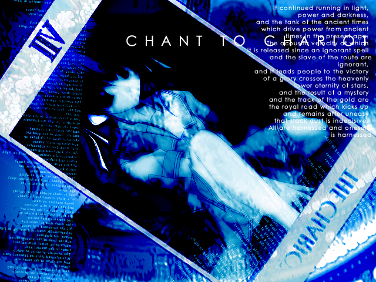

GENRE - drum'n bass -
TITLE - chariot -
Play Level ５key easy - ★★★
５key - ★★★★★★★
７key Light - ★★★★★★
７key - ★★★★★★★
【Read me】
ハイ、DLありがとうございます。SHIKIと申します。
今回はBMSJornal主催のイベント"BJCup5th"への出展作品となります。
前作"SEPIA"に続き、今回も-45氏・雅氏との共同作品です。
とりあえず曲について。
BJcupは初参加なので、クラスタ初参加作品の"Silent sky"以来ひっさしぶりにDrum'n bassに挑戦。
前々からもう一度durm'n bassは作ってみようと思ってたんだけど如何せん技術が・・・。
そういうワケで今回もやっぱりメロディー重視な似非ドラムンになってます。ハイそこONOKENの出来損ないとか言わない。
今回は曲作りメチャメチャ苦戦しました。。その割には前作ほど手応えがありません・・・
どこが気に入らないっていうとどこも不満な部分は無いのになぁ。全体的にムリヤリ作った感が強いというか。
今回もBGAが-45ということで、前回に引き続き容量無視のクオリティ重視です。
容量無視と言ってもかなり削ったつもりなんですが・・・全然縮まらねぇ。。
本当はシュワーンって感じのパッドって使うの好きじゃないんですが（容量でかくなるから）
まぁ今回は浮遊感を出したいつーコトで諦めてパッドに容量割いてます。
ブロードバンドの人が多いっつてもウチは依然ISDNですから。引き続き容量との戦いは続くみたいです。
ＢＧＡ。一部アニメですスゲェー。雅先生ありがとう。
オレと同様-45も不調だったらしいんですが、どこが不調なのかと小一時間（略
青を基調に美しくまとめられた中に散りばめられた萌えパワー。
”何でセーラー服？”とツッコミには”オレ達の趣味です。”と断言しておきます。文句あっか。
ＢＧＡ中の女の子の名前は美咲さんです。雅さんの妹です。そういう設定なのです。
今回も雅イラストと-45ＢＧＡで最強ですね。萌え度が上昇しているのは時代の流れでしょう。多分。
最後に。
このＢＭＳを気に入って下さった方も、「ここはこうした方がいいぞコノヤロー」という方、
今後の制作の参考・励みにしますので是非々々ご意見をお聞かせください。
-45BGAチケットは使い果たしたので、次からはまたピンでの制作に戻ります。
SHIKI・-45・雅によるユニット”赤ヘル友の会”はこれにて終了ですが、
そのうちまたひょっこり再結成されるかもしれませんので、その時にはまたヨロシクお願いします。
ちょっと哀愁系が続いたんで次はユーロかハピコアかそんなの作りたいかも。
ここ２作は気合入れすぎな作品だったんで次はもっちょい肩の力抜いて作ってみたいですハイ。
今回準備期間が長かったこともあり、制作には沢山の方の協力を頂きました。
音素材を提供して頂いたAKITOさん、ＷＡＶ処理アドバイスMAK-LOWさん。
譜面制作協力にsept-emさん・Playerβさん・DJ obeliskさん・・・って手伝い多すぎですねコレ。
以上の方々と-45・雅先生、ありがとうございました。
SHIKI http://kobe.cool.ne.jp/linker/ MAIL to digitalic9@hotmail.com
-45 http://malie.p-visual.com/
雅 http://t-miyabi.hp.infoseek.co.jp/
link to you? 韻